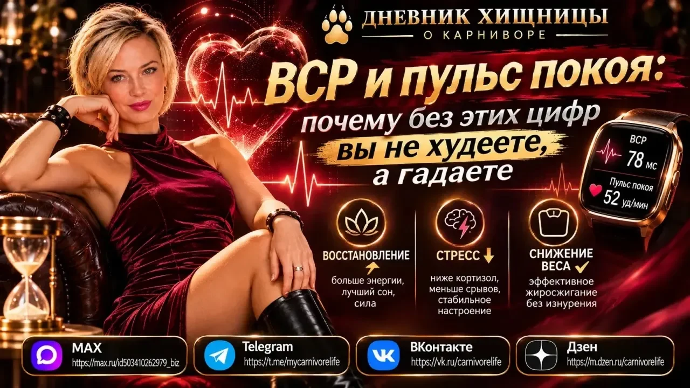

ВСР и пульс покоя

ВСР и пульс покоя: почему без этих цифр вы не худеете, а гадаете
Знаете, что отличает хищника от жертвы? Хищник не гадает. Он знает. Он чувствует свою добычу, читает следы и точно понимает, когда нужно атаковать, а когда — затаиться и восстановить силы.
А теперь посмотрите на себя. Вы едите мясо. Вы убрали углеводы. Вы пьёте соль и магний. Но если вы не измеряете пульс покоя и ВСР (вариабельность сердечного ритма) — вы стреляете в темноте. Вы не знаете, ваше тело сейчас в режиме «охоты и жиросжигания» или в режиме «выживания и запасания воды».
Читайте продолжение моей статьи в ДЗЕН
#ВСР #пульс #сон #карнивор #похудение #дневникхищницы
продолжение моей статьи в ДЗЕН